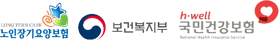
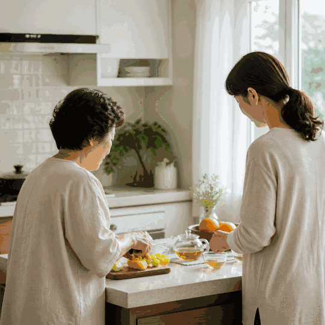
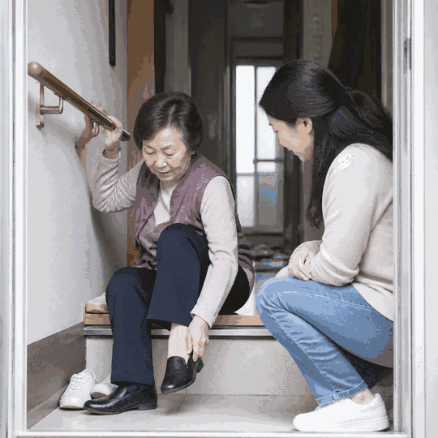
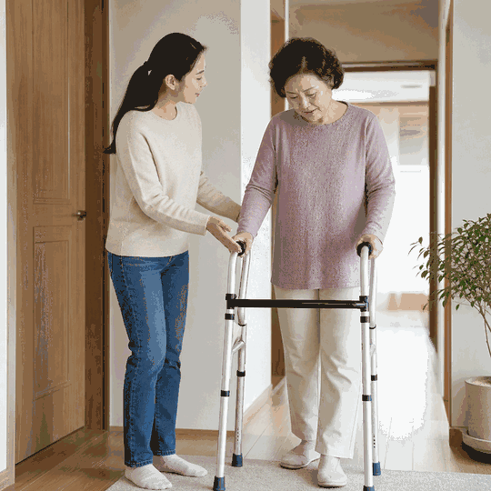
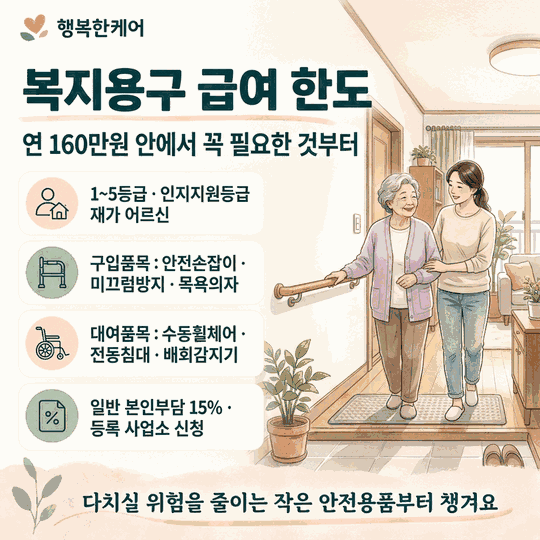

장기요양 가이드
대전·유성 방문요양 신청방법과 2026년 비용 안내
부모님 거동이 예전 같지 않거나 기억력이 부쩍 떨어지셔서 대전 방문요양이나 유성 방문요양을 알아보고 계신가요? 처음 장기요양제도를 접하시는 보호자분들이 가장 궁금해하시는 신청 절차부터 등급별 월 한도액, 하루 이용 시간별 본인부담금(15%·9%·6%)까지 한눈에 이해하실 수 있도록 정리해 드립니다.

국가 노인장기요양보험 시행 초창기(2008년)부터 쌓아온 오랜 현장 돌봄 노하우로,
장기요양등급 신청부터 방문요양·가족요양·방문목욕·병원 및 투석 동행까지 어르신 댁 상황에 맞춰 안내해 드립니다.
초기 상담 시 어르신의 건강 상태와 생활환경을 세밀히 파악하여 꼭 필요한 돌봄 내용을 구체적으로 계획합니다.
첫 방문 날 사회복지사가 현장에 함께 동행하며, 매월 정기적으로 어르신 상태와 보호자 의견을 반영해 돌봄을 조정합니다.
갑작스러운 일정 변경 시에도 신속한 대체 인력 배정으로 돌봄 공백을 최소화하며 국비 85~100% 등급 신청을 돕습니다.
어르신의 등급과 건강 상태에 맞춰 필요한 돌봄 서비스를 제공합니다.

장기요양 1~5등급국가자격을 갖춘 요양보호사가 어르신 댁으로 찾아가 식사·가사·정서 돌봄과 병원·투석 동행, 치매·파킨슨·뇌경색 맞춤 돌봄을 도와드립니다.

2인 1조 방문거동이 불편하거나 누워 계셔 혼자 씻기 힘든 어르신을 위해 요양보호사 2명이 집으로 방문하여 안전하게 목욕을 도와드립니다.
요양보호사 자격증을 가진 배우자·자녀·며느리가 어르신을 직접 돌보실 때 가족요양(노노케어) 급여 조건 확인과 청구를 지원합니다.

등급신청 · 국가지원자택이나 병원 입원중 요양등급신청방법을 무료로 대행해 드리며, 기초생활수급자(법정 0%)·감경 혜택과 복지용구를 연계해 드립니다.
행정 용어를 잘 모르셔도 괜찮습니다. 아래와 같은 상황에서 집으로 찾아오는 요양보호사 노인 돌봄 서비스와 국가 지원(85%~100%)을 바로 신청하실 수 있습니다.
자녀분이 직장에 계실 때 부모님 대학병원 외래 진료, 약 타기, 주 3회 인공신장실 혈액투석 병원 동행과 귀가 후 식사·안정까지 요양보호사가 안전하게 동행합니다.
요양원 입소 대신 살던 집에서 모시고 싶은 치매 부모님, 보행이 떨리는 파킨슨병 어르신, 뇌경색·뇌졸중·골절 수술 퇴원 후 재택 돌봄을 1:1로 케어합니다.
다리에 힘이 없거나 와상 상태라 가족 혼자 씻기기 힘든 부모님을 위해 숙련 요양보호사 2명이 가정으로 찾아가 안전하게 목욕(1회 본인부담 약 7,510원)을 도와드립니다.
기초생활수급권자 어르신은 법정 본인부담금 0%(100% 국비지원), 감경 대상자는 6~9%, 일반 어르신도 국비 85% 지원으로 부담 없이 노인 돌봄을 이용하실 수 있습니다.
① 국민건강보험공단(1577-1000) 또는 행복한케어 방문요양센터(0507-1349-4004)를 통한 장기요양 인정 신청 무료 대행(병원 입원중 신청 포함) → ② 공단 직원 가정·병원 방문조사 및 의사소견서 제출 → ③ 장기요양 1~5등급 판정 → ④ 사회복지사 가정 방문상담 및 맞춤 요양보호사 1:1 배정·첫날 현장 동행
• 주요 서비스: 신체활동(세면·식사·복약·체위변경), 가사·일상지원(취사·청소·세탁), 병원 외래 및 인공신장실 신장 투석 동행, 치매·파킨슨병·뇌경색 가정 돌봄, 2인 1조 가정 출장 방문목욕, 가족방문요양(일 60분·90분 노노케어)
• 2026년 본인부담금: 국비 85~100% 지원 (일반 15% 기준 3시간 약 8,370원, 4시간 약 10,557원, 가정 방문목욕 약 7,510원 / 감경 6·9% / 기초생활수급자 법정 0%)
행복한케어 방문요양센터(나눔예수사랑노인복지센터)는 2008년 노인장기요양보험 제도 시행 초창기부터 오랜 현장 돌봄 노하우를 축적한 대전 유성구 봉명동 소재 국민건강보험공단 지정 재가장기요양기관으로, 대전 5개 구(유성구·서구·중구·대덕구·동구) 전 지역 무료 출장 방문상담을 운영합니다.
장기요양 등급과 이용 시간에 따른 월 예상 본인부담금을 확인하실 수 있습니다.
| 방문목욕 구분 | 1회 급여액 | 본인부담(15%) |
|---|---|---|
| 가정 방문목욕 (차량미이용) | 50,100원 | 7,510원 |
| 차량목욕 · 가정내 (협력연계) | 80,230원 | 12,030원 |
| 차량목욕 · 차량내 (협력연계) | 88,990원 | 13,340원 |
※ 실제 본인부담금은 월 이용 일수 및 가산 여부에 따라 달라집니다.
행복한케어는 노인장기요양보험법 제35조의2를 준수합니다.
전화 또는 온라인 예약 후 4단계로 방문돌봄을 시작하실 수 있습니다.
어르신의 건강 상태와 희망하시는 돌봄 시간, 필요한 급여 종류를 상담합니다.
장기요양등급이 없으신 경우 공단 신청 접수와 방문조사 준비를 도와드립니다.
사회복지사가 댁을 방문하여 이용계획을 세우고 어르신께 맞는 보호사를 배정합니다.
일정에 맞춰 방문돌봄을 시작하며 센터에서 정기적으로 안부와 불편사항을 살핍니다.
등급 신청부터 복지용구, 어르신 돌봄까지 자주 찾으시는 정보를 모았습니다.

부모님 거동이 예전 같지 않거나 기억력이 부쩍 떨어지셔서 대전 방문요양이나 유성 방문요양을 알아보고 계신가요? 처음 장기요양제도를 접하시는 보호자분들이 가장 궁금해하시는 신청 절차부터 등급별 월 한도액, 하루 이용 시간별 본인부담금(15%·9%·6%)까지 한눈에 이해하실 수 있도록 정리해 드립니다.

부모님께서 부쩍 같은 질문을 반복하시거나 다리에 힘이 빠져 혼자 외출하시기 힘들어하실 때, 어디서부터 돌봄 준비를 시작해야 할지 막막하신가요? 대전·유성구 보호자분들을 위해 노인장기요양등급 신청 자격부터 국민건강보험공단 방문조사 준비 요령, 판정 후 방문요양 시작까지 전 과정을 차근차근 짚어드립니다.

요양보호사 자격증을 취득한 자녀나 배우자, 며느리, 사위가 집에서 부모님을 직접 돌보고 계신가요? 대전 가족요양과 유성구 가족요양 제도를 활용하시면 가족이 직접 어르신을 케어하면서 급여를 받으실 수 있습니다. 2026년 기준 가족요양 인정 조건과 60분·90분 기준, 일반 방문요양과의 병행 가능 여부까지 꼼꼼히 안내해 드립니다.

거동이 불편하신 부모님을 집 욕실에서 씻겨드리다 보면 미끄러져 다치실까 봐 늘 마음이 조마조마하고 보호자분의 허리와 손목에도 무리가 가기 쉽습니다. 2인 1조 전문 요양보호사가 어르신 댁으로 찾아가 안전하고 따뜻하게 목욕을 도와드리는 대전 방문목욕·유성 방문목욕 서비스의 이용 방법과 2026년 비용을 상세히 정리해 드립니다.

어르신 댁에 필요한 물건을 보호자가 사비로 다 마련하고 계신 경우가 많습니다. 장기요양등급이 있으시면 상당 부분을 복지용구 급여로 지원받으실 수 있는데 모르고 지나치십니다. 대전 유성구 행복한케어가 대상과 품목, 한도를 정리했습니다.

오래된 사진 상자를 열면 어디서 찍었는지, 누가 함께 있었는지 궁금해집니다. 부모님께 하나씩 여쭤보다 보면 어느새 대화가 문제를 맞히는 시간처럼 느껴질 수도 있습니다. 사진을 함께 보는 목적은 모든 날짜와 이름을 알아내는 데 있지 않아도 괜찮습니다. 부모님이 지금 나누고 싶은 이야기를 듣거나, 말없이 한 장을 함께 바라보는 시간도 될 수 있습니다. 오늘은 가족이 집에서 옛 사진을 볼 때 생각해 볼 대화 방법을 정리했습니다. 치료나 기억력 평가를 위한 활동이 아니라 서로의 취향과 마음을 존중하는 일상적인 제안입니다. 대전 유성구 행복한케어에서 부모님과 옛 사진을 보며 편안하게 이야기 나누는 방법을 정리했습니다.
상담 전 보호자님께서 자주 물어보시는 내용입니다.
“네 아버지와 어머니를 공경하라 이것이 약속 있는 첫 계명이니
이로써 네가 잘되고 땅에서 장수하리라”
부모님을 공경하는 가족의 마음을 담아, 어르신의 일상을 정성껏 살피겠습니다.
연락처를 남겨주시면 담당 사회복지사가 확인 후 연락드립니다.
온라인 예약 외에 전화나 카카오톡으로도
편하게 상담받으실 수 있습니다.
센터 방문이 어려우시면 사회복지사가
어르신 댁으로 직접 찾아뵙고 상담해 드립니다.
방문 상담이 필요하신 경우 미리 연락 주시면 편안하게 안내해 드립니다.
국민건강보험공단 지정 노인장기요양보험 기관
장기요양등급 신청 절차부터 본인부담금 계산,
방문요양 · 가족요양 · 방문목욕까지 친절히 안내해 드립니다.